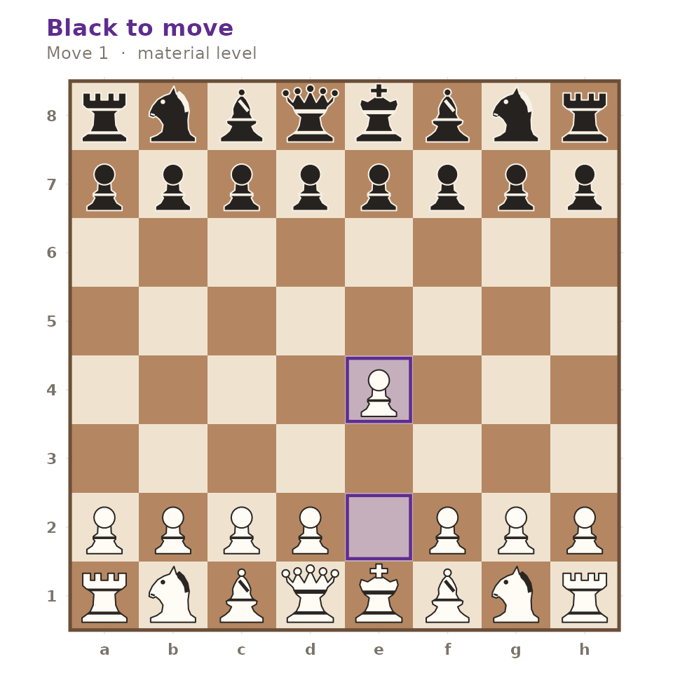
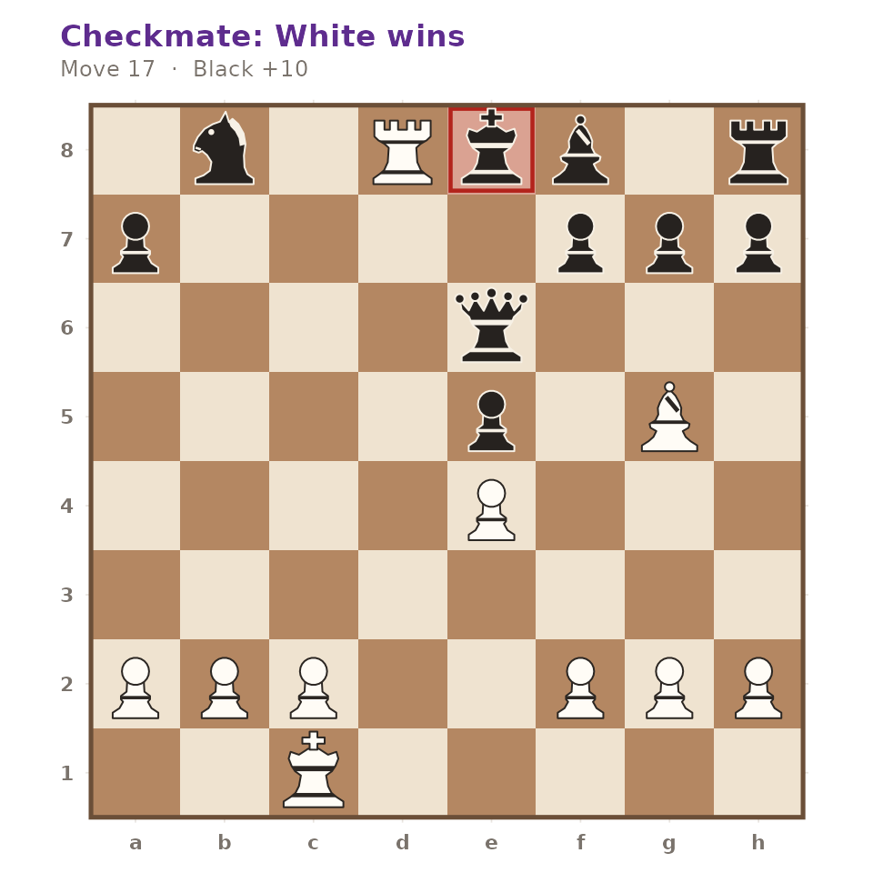

gambitR is a self-contained chess toolkit written in plain R. Nothing outside R is required: move generation, notation, evaluation and search are all implemented in the package. This article walks the whole pipeline once, from a position to a finished game.
A position
Every workflow starts from a gm_position. The default is
the standard starting position.
pos <- gm_position()
pos
#> <gm_position> — White to move
#> 8 ♜ ♞ ♝ ♛ ♚ ♝ ♞ ♜
#> 7 ♟ ♟ ♟ ♟ ♟ ♟ ♟ ♟
#> 6 · · · · · · · ·
#> 5 · · · · · · · ·
#> 4 · · · · · · · ·
#> 3 · · · · · · · ·
#> 2 ♙ ♙ ♙ ♙ ♙ ♙ ♙ ♙
#> 1 ♖ ♘ ♗ ♕ ♔ ♗ ♘ ♖
#> a b c d e f g h
#> FEN: "rnbqkbnr/pppppppp/8/8/8/8/PPPPPPPP/RNBQKBNR w KQkq - 0 1"Positions are read from and written to Forsyth-Edwards Notation, and the two are exact inverses of one another.
fen <- gm_write_fen(pos)
fen
#> [1] "rnbqkbnr/pppppppp/8/8/8/8/PPPPPPPP/RNBQKBNR w KQkq - 0 1"
identical(gm_write_fen(gm_read_fen(fen)), fen)
#> [1] TRUEAny legal position can be supplied directly.
gm_position("r1bqkbnr/pppp1ppp/2n5/4p3/2B1P3/5Q2/PPPP1PPP/RNB1K1NR w KQkq - 4 4")
#> <gm_position> — White to move
#> 8 ♜ · ♝ ♛ ♚ ♝ ♞ ♜
#> 7 ♟ ♟ ♟ ♟ · ♟ ♟ ♟
#> 6 · · ♞ · · · · ·
#> 5 · · · · ♟ · · ·
#> 4 · · ♗ · ♙ · · ·
#> 3 · · · · · ♕ · ·
#> 2 ♙ ♙ ♙ ♙ · ♙ ♙ ♙
#> 1 ♖ ♘ ♗ · ♔ · ♘ ♖
#> a b c d e f g h
#> FEN: "r1bqkbnr/pppp1ppp/2n5/4p3/2B1P3/5Q2/PPPP1PPP/RNB1K1NR w KQkq - 4 4"Legal moves
gm_legal_moves() enumerates every legal move, with
standard algebraic notation already resolved, including disambiguation
and check or mate suffixes.
moves <- gm_legal_moves(pos)
moves
#> # A tibble: 20 × 6
#> from to piece san promotion flag
#> <chr> <chr> <chr> <chr> <chr> <chr>
#> 1 a2 a3 P a3 NA normal
#> 2 a2 a4 P a4 NA normal
#> 3 b2 b3 P b3 NA normal
#> 4 b2 b4 P b4 NA normal
#> 5 c2 c3 P c3 NA normal
#> 6 c2 c4 P c4 NA normal
#> 7 d2 d3 P d3 NA normal
#> 8 d2 d4 P d4 NA normal
#> 9 e2 e3 P e3 NA normal
#> 10 e2 e4 P e4 NA normal
#> 11 f2 f3 P f3 NA normal
#> 12 f2 f4 P f4 NA normal
#> 13 g2 g3 P g3 NA normal
#> 14 g2 g4 P g4 NA normal
#> 15 h2 h3 P h3 NA normal
#> 16 h2 h4 P h4 NA normal
#> 17 b1 a3 N Na3 NA normal
#> 18 b1 c3 N Nc3 NA normal
#> 19 g1 f3 N Nf3 NA normal
#> 20 g1 h3 N Nh3 NA normalThe generator is verified against the published perft reference counts, so castling, en passant, promotion and pins are all handled exactly. Here is a position where exactly one en passant capture is legal:
ep <- gm_position("rnbqkbnr/ppp1p1pp/8/3pPp2/8/8/PPPP1PPP/RNBQKBNR w KQkq f6 0 3")
subset(gm_legal_moves(ep), flag == "ep")
#> # A tibble: 1 × 6
#> from to piece san promotion flag
#> <chr> <chr> <chr> <chr> <chr> <chr>
#> 1 e5 f6 P exf6 NA epMoves are applied with gm_move(), which accepts standard
algebraic notation or the long algebraic form an engine would use.
gm_write_fen(gm_move(pos, "e4"))
#> [1] "rnbqkbnr/pppppppp/8/8/4P3/8/PPPP1PPP/RNBQKBNR b KQkq e3 0 1"
gm_write_fen(gm_move(pos, "e2e4"))
#> [1] "rnbqkbnr/pppppppp/8/8/4P3/8/PPPP1PPP/RNBQKBNR b KQkq e3 0 1"gm_status() reports the state of the game.
fools_mate <- gm_position("rnb1kbnr/pppp1ppp/8/4p3/6Pq/5P2/PPPPP2P/RNBQKBNR w KQkq - 1 3")
gm_status(fools_mate)
#> [1] "checkmate"
nrow(gm_legal_moves(fools_mate))
#> [1] 0Drawing a board
gm_plot_board() returns a ggplot2 object,
so it composes with the rest of the grammar of graphics rather than
drawing to a device itself.
gm_plot_board(gm_move(pos, "e4"), highlight = c("e2", "e4"))
autoplot() dispatches to the same function, and
flip = TRUE shows the board from Black’s side.
Reading and writing PGN
gm_read_pgn() parses header tags and movetext, strips
comments, numeric annotation glyphs and variations, and replays the
mainline through the generator. Here is Morphy’s Opera Game.
opera <- paste(
'[Event "Paris Opera"]',
'[White "Morphy, Paul"]',
'[Black "Duke Karl / Count Isouard"]',
'[Result "1-0"]',
"",
"1. e4 e5 2. Nf3 d6 3. d4 Bg4 {A dubious pin.} 4. dxe5 Bxf3 5. Qxf3 dxe5",
"6. Bc4 Nf6 7. Qb3 Qe7 8. Nc3 c6 9. Bg5 b5 10. Nxb5 cxb5 11. Bxb5+ Nbd7",
"12. O-O-O Rd8 13. Rxd7 Rxd7 14. Rd1 Qe6 15. Bxd7+ Nxd7 16. Qb8+ Nxb8",
"17. Rd8# 1-0",
sep = "\n"
)
game <- gm_read_pgn(opera, text = TRUE)
game
#> <gm_game> — 33 half-moves, result "1-0"
#> Morphy, Paul vs Duke Karl / Count Isouard
#> 1. e4 e5 2. Nf3 d6 3. d4 Bg4 4. dxe5 Bxf3 5. Qxf3 dxe5 6. Bc4 Nf6 ...Because every move was replayed, the final position really is mate.
gm_plot_board(final)
gm_write_pgn() is the inverse, and round-trips the
mainline.
identical(gm_read_pgn(gm_write_pgn(game), text = TRUE)$moves, game$moves)
#> [1] TRUEEvaluation and search
gm_evaluate() scores a position in centipawns from
White’s point of view, combining material, piece-square tables, mobility
and pawn shelter. The starting position is symmetric, so it scores
zero.
gm_evaluate(gm_position())
#> [1] 0
gm_evaluate(gm_position("rnb1kbnr/pppppppp/8/8/8/8/PPPPPPPP/RNBQKBNR w KQkq - 0 1"))
#> [1] 876gm_bestmove() runs an alpha-beta search on top of that
evaluation. It finds forced mates.
gm_bestmove(gm_position("6k1/5ppp/8/8/8/8/5PPP/R5K1 w - - 0 1"),
depth = 2, verbose = FALSE
)
#> # A tibble: 1 × 4
#> san score depth nodes
#> <chr> <dbl> <int> <int>
#> 1 Ra8# 99999 2 78If an external UCI engine such as Stockfish is on the
PATH, engine = "uci" delegates to it through
gm_uci_bestmove() instead. See the analysis article for
details.
Playing and simulating
gm_play() runs a whole game between two strategies,
which may be the built-in shortcuts "random" and
"engine" or any function that takes a position and returns
a move.
set.seed(2)
played <- gm_play(white = "random", black = "random", max_moves = 30, verbose = FALSE)
played
#> <gm_game> — 60 half-moves, result "1/2-1/2"
#> random vs random
#> 1. h3 a5 2. c3 b5 3. Qb3 g6 4. h4 Nf6 5. e4 c5 6. e5 Na6 ...
played$tags$Termination
#> [1] "move limit"gm_simulate() batches that into a tidy summary.
set.seed(3)
gm_simulate(white = "random", black = "random", n = 3, max_moves = 20, verbose = FALSE)
#> # A tibble: 3 × 4
#> game result plies termination
#> <int> <chr> <int> <chr>
#> 1 1 1/2-1/2 40 move limit
#> 2 2 1/2-1/2 40 move limit
#> 3 3 1/2-1/2 40 move limitOpenings and puzzles
The bundled ECO book and puzzle set drive the explorer and the trainer.
head(gm_openings("Sicilian Defense")[, c("eco", "name")])
#> # A tibble: 6 × 2
#> eco name
#> <chr> <chr>
#> 1 B20 Sicilian Defense
#> 2 B21 Sicilian Defense, Smith-Morra Gambit
#> 3 B22 Sicilian Defense, Alapin Variation
#> 4 B23 Sicilian Defense, Closed Variation
#> 5 B27 Sicilian Defense, Hyperaccelerated Dragon
#> 6 B29 Sicilian Defense, Nimzo-American Variation
gm_identify_opening(game)
#> # A tibble: 1 × 3
#> eco name book_depth
#> <chr> <chr> <int>
#> 1 C41 Philidor Defense 4
puzzle <- gm_puzzle(id = "gm-0001")
puzzle
#> <gm_puzzle> "gm-0001" — theme "backRank", rating 800
#> White to move, 1 move to find
#> 8 · · · · · · ♚ ·
#> 7 · · · · · ♟ ♟ ♟
#> 6 · · · · · · · ·
#> 5 · · · · · · · ·
#> 4 · · · · · · · ·
#> 3 · · · · · · · ·
#> 2 · · · · · ♙ ♙ ♙
#> 1 ♖ · · · · · ♔ ·
#> a b c d e f g h
gm_check_solution(puzzle, puzzle$solution)
#> # A tibble: 1 × 3
#> correct solved_plies total_plies
#> <lgl> <int> <int>
#> 1 TRUE 1 1Where to go next
-
vignette("analysis", package = "gambitR")for evaluation, search and the UCI hook. -
vignette("openings", package = "gambitR")for the opening explorer. -
vignette("puzzles", package = "gambitR")for the puzzle trainer. -
gm_run_app()launches the interactive study application, which puts all six of these workflows behind one interface.